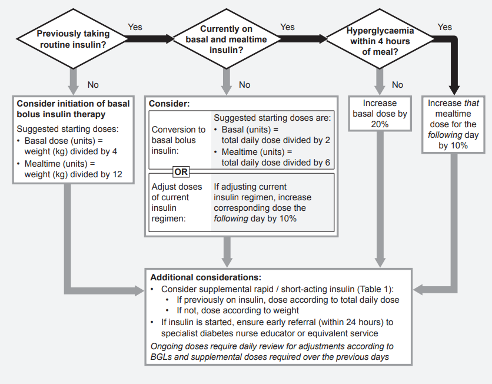
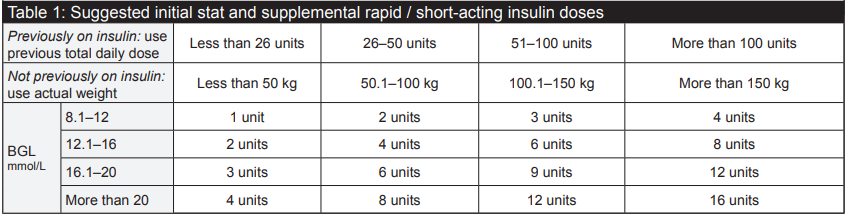

Hyperglycaemia
General approach
Management guidelines (ACI)
- If patient is NBM, vomiting or hyperglycaemic despite correction, consider insulin infusion
- If patient has T1DM and BGL > 15mM, check ketones then follow local guidelines
- Hydration and dietary status: is hyperglycaemia easily explained by dietary indiscretion?
- Ketones: if ketone test is positive consider diabetic ketoacidosis (DKA). Seek expert advice
- Concurrent medications: if on oral corticosteroids or Total Parenteral Nutrition (TPN) seek expert advice
- Missed doses of insulin or oral hypoglycaemic agent
- If not eating normally or markedly labile BGLs consider insulin infusion
- Are alterations to insulin regimen or initiation of insulin required? Consider:
- Is it likely that insulin will be continued after discharge? If not, is it necessary to start it currently?
- What was the pre-morbid BGL control like? What is current HbA1c?
- Does the patient want long term insulin treatment? If so, what is their preferred regimen?
- Was hyperglycaemia secondary to treated hypoglycaemia?


Supplemental Insulin (Insulin in the context of hyperglycaemia)
Supplemental insulin is given in the form of rapid acting insulin analogues, such as Aspart (NovoRapid), Lispro (Humalog) or Glulisine (Apidra). Follow local guidelines first, however in absence of local guidelines, ACI suggests:
If Pre-meal BGL is: - 10-12mM - give 2U rapid acting insulin - 12-18mM - give 4U rapid acting insulin - 18-20mM - give 6U rapid acting insulin - >=20mM - call clinical review
Initiation of Insulin Therapy
Type I Diabetes
- Contact diabetes registrar for assistance
Basal bolus regimen:
- 0.3-0.4 units/kg/day (Total daily insulin dose)
- 1/3 as basal insulin before bed (e.g. lantus (glargine) or levemir (detemir))
- 2/3 as rapid acting insulin divided equally before each meal (e.g. lispro (Humalog), aspart (Novorapid), glulisine (Apidra))
- Give supplemental rapid acting insulin as required to correct hyperglycaemia
- Review glycaemic control and adjust insulin doses daily
Type II Diabetes
A. Oral hypoglycaemic agents(OHAs) may be able to be continued/titrated in some cases, but consider cessation/dose reduction under the following circumstances:
- Metformin:
- Cease if eGFR < 30 or if rapidly progressive renal failure or if lactic acidosis.
- Reduce/withhold dose if eGFR 30-60 or if radio-contrast required.
- Metformin can be resumed if renal function improves sufficiently.
- Sulphonylureas:
- Consider ceasing/omitting if poor oral intake/risk of hypoglycaemia
- Glitazones:
- Cease if cardiac failure present
- Incretins: DPP4 Inhibitors/GLP1 agonists
- Cease DPPIV inhibitors/GLP1 analogues if pancreatitis present
- SGLT2 Inhibitors:
- Cease if has renal failure or urogenital infections
- Withhold if acute illness, fasting or preoperative. Consider screen for euglycaemic ketoacidosis
 B. Insulin: often ultimately necessary to achieve satisfactory glycaemic control, especially with:
B. Insulin: often ultimately necessary to achieve satisfactory glycaemic control, especially with:
- Pre-existing poor glycaemic levels (HbA1C > 8% on maximal oral hypoglycaemic agents or > 9% in any case) OR with precipitants e.g. glucocorticoids OR if usual oral hypoglycaemic agents have to be ceased
- Continue metformin if no contraindications. Cease other oral hypoglycaemic agents.
- Commence insulin: Total daily dose =0.3-0.5 units/kg/day (0.3 units for insulin sensitive, 0.5 units for standard).
- 50% of this to be given as once daily basal insulin (Lantus)
- 50% of this to be given as prandial (bolus) insulin e.g. Novorapid, Humalog, Apidra- should be given with meals.
NB: If insulin is initiated in hospital, please ensure adequate time for discharge planning, either for a change to an appropriate discharge regimen (e.g. a bd premix or basal only regime) or to allow sufficient time for patient to be educated about insulin administration (please contact diabetes educator for education).
Correction of Hyperglycaemia with Subcutaneous Insulin
(see also guidance for commencing and Adjusting Basal bolus insulin)
- Avoid use of sliding scale insulin as sole therapy as it tends to exacerbate metabolic instability
- A change to basal-bolus insulin could be considered in patients with:
- Pre-existing poor glycaemic control (HbA1C > 8%)
- Risk factors for hyperglycaemia or fluctuations in blood glucose levels (e.g. > 10mg daily prednisolone or equivalent doses of glucocorticoids; enteric feeds) in patients with known diabetes mellitus
- Patients already on insulin or maximal doses of oral hypoglycaemic agents, particularly with other risk factors / high risk major surgery (e.g. coronary artery bypass surgery)
- Supplemental rapid acting insulin in addition to usual charted SC insulin at meal times may be advisable. Frequent need for supplemental insulin suggests that usual insulin needs may need to be increased. Supplemental insulin should not be given without concurrent regular review of charted insulin requirements.
Supplemental Insulin
- Use Insulin Aspart (Novorapid)
-
Supplemental insulin given in addition to prescribed premeal dose only

-
Note: If patient very sensitive to insulin or problematic hypos, may need to avoid supplemental insulin
Titration:
- Basal Insulin e.g. Lantus, Levemir
- If fasting and/or mean BGL > 10mmo/l and no hypoglycemia
Increase by 10-20% (not more than 5 units) - If mild hypoglycaemia (BGL 3.1- 4mmol/l) on single occasion
Decrease by 10-20% - if moderate- severe hypoglycaemia (BGL < 3mmol/l or decreased conscious state) or recurrent hypoglycaemia
Decrease by 20-30% + endocrine consult
- If fasting and/or mean BGL > 10mmo/l and no hypoglycemia
- Bolus (prandial) insulin e.g. Novorapid, Humalog, Apidra
- If the 2hr post-meal BGL exceeds 10 mmol/L (or target range for patient), that individual mealtime bolus should be increased the next day by 2-4 units
- If additional corrective doses of insulin are required, avoid excessive and overlapping doses of insulin. For significant hyperglycaemia, e.g. > 20mmol/l, a corrective dose of 0.1 units/kg of rapid acting insulin analogue could be considered (minimise night time doses because of risk of hypoglycaemia- not more than 0.025-0.05units/kg). If significant hyperglycaemia persists, consider intravenous variable dose insulin-glucose infusion
- Re-check BGL 2 hr after administration of extra insulin in order to ensure it has not been over- or under- effective
- Avoid giving extra insulin too frequently
Give rapid-acting insulin analogues rather than regular human short acting insulin (such as Actrapid) given the more rapid onset of action and the reduced potential for overlapping of doses